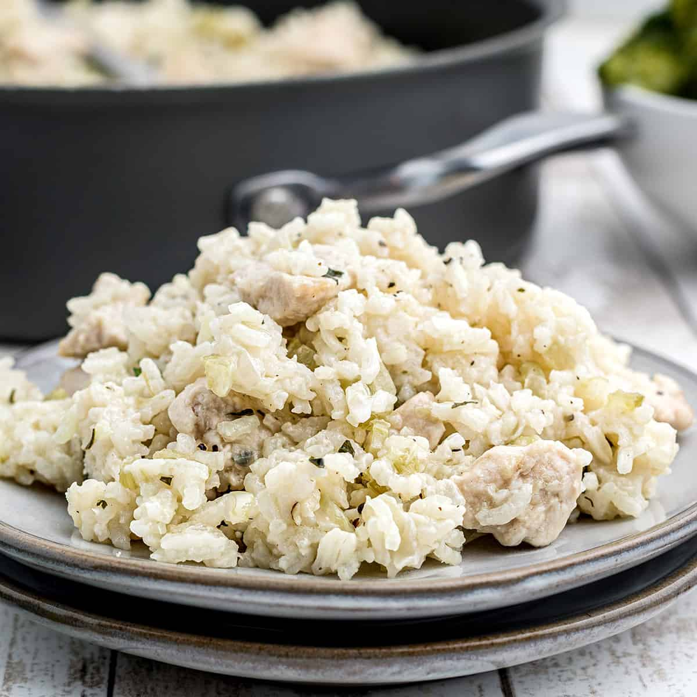

Chicken and Rice Recipe

Description
This old-fashioned one pot Chicken and Rice recipe is pure, hearty comfort food. For this simple recipe, chicken, rice, celery, and onions are combined and steamed to perfection all in one pot. It’s a great meal to make on a weeknight or when you need something that really sticks to your ribs!
Ingredients:
- Boneless, skinless chicken (diced)
- Rice
- Celery
- Onion
- Chicken Stock
- Parsley
- Butter
- Salt & Pepper
- Start by melting half a stick of butter (that is 4 tablespoons) over medium heat in a deep sided skillet.
- When the butter has melted, add the diced celery and onion. Let it cook slowly, giving it a stir every once in a while until it has softened but has not started to brown.
- Add the chicken and cook, stirring frequently, until the chicken has stiffened and started to brown very slightly.
- Add the stock and stir in the rice.
- Add the salt, pepper, remaining butter, and parsley.
- Bring the mixture to a boil, then reduce the heat to low.
- Cover the pan, and cook 20 minutes or until the rice is tender.
- When you are ready to serve, use a fork to fluff the rice. Sprinkle a little additional chopped parsley over the top
Back to Homepage